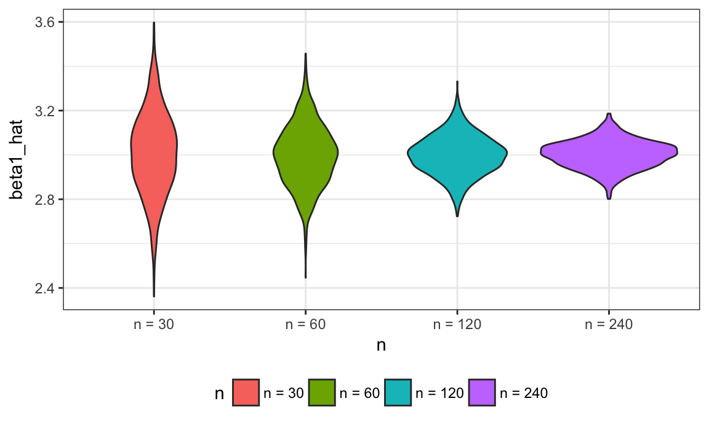

We’ve noted that functions are helpful when you repeat code more than twice; we’ve also noted that a lot of statistical methods involve doing the same thing a large number of times. Putting those together motivates a careful approach to iteratation; conducting simulations is a very relevant example.
This is the second module in the Iteration topic; the relevant slack channel is here.
I’ll write code for today’s content in a new R Markdown document called iteration_and_simulation.Rmd in the example_iteration directory / repo. The code chunk below loads the usual packages.
library(tidyverse)
## Loading tidyverse: ggplot2
## Loading tidyverse: tibble
## Loading tidyverse: tidyr
## Loading tidyverse: readr
## Loading tidyverse: purrr
## Loading tidyverse: dplyr
## Conflicts with tidy packages ----------------------------------------------
## filter(): dplyr, stats
## lag(): dplyr, stats
theme_set(theme_bw())
theme_update(legend.position = "bottom")
set.seed(1)for loop approachI’m going to start with a pretty simple dataframe.
df = data_frame(
a = rnorm(20),
b = rnorm(20),
c = rnorm(20),
d = rnorm(20)
)Suppose I wanted to apply my simple z_score function from writing functions to each column of this dataframe. For completeness, that function is below.
z_score = function(x) {
z = mean(x) / sd(x)
z
}A direct way to do this application is the following.
z_score(df[[1]])
## [1] 0.208621
z_score(df[[2]])
## [1] -0.007426873
z_score(df[[3]])
## [1] 0.1714126
z_score(df[[4]])
## [1] 0.09686769But now we’ve broken our “don’t repeat code” rule! This a problem for loops can solve.
Below I define an output list with the same number of entries as my target dataframe; a sequence to iterate over; and a for loop body that applies the z_score function for each sequence element and saves the result.
output = vector("list", length = 4)
for (i in 1:4) {
output[[i]] = z_score(df[[i]])
}This is already cleaner, and will make life easier the larger our sequence gets.
A criticism of for loops is that there’s a lot of overhead – you have to define your output, there’s the for loop bookkeeping to do, etc – that distracts from the purpose of the code. In this case, we want to apply z_score to each column of df, but that’s down inside the loop.
The map functions in purrr try to make the purpose of your code clear. Compare the loop above to the line below.
output = map(df, z_score)The first argument to map is the vector or list we want to iterate over; the second argument is the function we want to apply each time. This line will produce the same output as the loop above, but (once you’re used to maps …) is clearer and easier to understand.
This kind of code is why we pointed out that functions can be passed as arguments to other functions. Throughout, the second argument to map is a function we just wrote. To see how powerful this can be, suppose we wanted to apply a different function, say median, to each column of df. The chunk below includes both the loop approach and the map approach.
output = vector("list", length = 4)
for (i in 1:4) {
output[[i]] = median(df[[i]])
}
output = map(df, median)Again the approaches produce the same output, but the map places the focus squarely on the function you want to apply by removing some of the bookkeeping.
There are some useful variants if you know what kind of output you’re going to produce. Below we use map_dbl because z_score outputs a single numeric value each time; the result is a vector instead of a list.
output = map_dbl(df, z_score)Let’s look at a case where the output isn’t a scalar; our modified z_score function is below.
z_score = function(x) {
if (!is.numeric(x)) {
stop("argument x should be numeric")
} else if (length(x) == 1) {
stop("z-scores cannot be computed for length 1 vectors")
}
mean_x = mean(x)
sd_x = sd(x)
z = mean_x / sd_x
data_frame(
mean = mean_x,
sd = sd_x,
z = z
)
}We can apply this function to df using map to produce a list.
output = map(df, z_score)Since we know this produces a df, though, we can use the output-specific map_df.
output = map_df(df, z_score)This is pretty handy when your map statement is part of a longer chain of piped commands.
In reading data from the web, we wrote code that allowed us to scrape information in Amazon reviews. That code is below.
library(rvest)
library(stringr)
read_page_reviews <- function(url) {
h = read_html(url)
title = h %>%
html_nodes("#cm_cr-review_list .review-title") %>%
html_text()
stars = h %>%
html_nodes("#cm_cr-review_list .review-rating") %>%
html_text() %>%
str_extract("\\d") %>%
as.numeric()
text = h %>%
html_nodes(".review-data:nth-child(4)") %>%
html_text()
data_frame(title, stars, text)
}
url_base = "https://www.amazon.com/product-reviews/B00005JNBQ/ref=cm_cr_arp_d_viewopt_rvwer?ie=UTF8&reviewerType=avp_only_reviews&sortBy=recent&pageNumber="
urls = str_c(url_base, 1:10)
dynamite_reviews = map_df(urls, read_page_reviews)Hopefully this code is now 100% clear!
The LoTR data is a bit trickier. A version of the function we wrote last class is below.
lotr_load_and_tidy = function(path, range, movie_name) {
df = readxl::read_excel(path, range = range) %>%
janitor::clean_names() %>%
gather(key = sex, value = words, female:male) %>%
mutate(race = tolower(race),
movie = movie_name)
df
}Can’t really using map directly, because there are two arguments we need to iterate over – range and movie_name. This is where map2 becomes handy!
cell_ranges = list("B3:D6", "F3:H6", "J3:L6")
movie_names = list("Fellowship", "Two Towers", "Return")
lotr_tidy = map2_df(.x = cell_ranges, .y = movie_names,
~lotr_load_and_tidy(path = "./data/LotR_Words.xlsx",
range = .x,
movie_name = .y)) %>%
select(movie, everything())
lotr_tidy
## # A tibble: 18 x 4
## movie race sex words
## <chr> <chr> <chr> <dbl>
## 1 Fellowship elf female 1229
## 2 Fellowship hobbit female 14
## 3 Fellowship man female 0
## 4 Fellowship elf male 971
## 5 Fellowship hobbit male 3644
## 6 Fellowship man male 1995
## 7 Two Towers elf female 331
## 8 Two Towers hobbit female 0
## 9 Two Towers man female 401
## 10 Two Towers elf male 513
## 11 Two Towers hobbit male 2463
## 12 Two Towers man male 3589
## 13 Return elf female 183
## 14 Return hobbit female 2
## 15 Return man female 268
## 16 Return elf male 510
## 17 Return hobbit male 2673
## 18 Return man male 2459That code is makes sure all the details are clear, but shorter versions are possible.
lotr_tidy = map2_df(cell_ranges, movie_names,
lotr_load_and_tidy,
path = "./data/LotR_Words.xlsx") %>%
select(movie, everything()) We can compare this to code we wrote in writing functions, when we had given the path argument a default value.
bind_rows(
lotr_load_and_tidy(cell_range = "B3:D6", movie_name = "Fellowship"),
lotr_load_and_tidy(cell_range = "F3:H6", movie_name = "Two Towers"),
lotr_load_and_tidy(cell_range = "J3:L6", movie_name = "Return")
)In this case it’s not obvious which is better – using map2_df or three function calls inside bind_rows – and that happens a lot. No matter what, though, you should be able to write code either way so you have a choice instead of being constrained by your skillset!
Last class we wrote a short function to simulate data from a simple linear regression, to fit the regression model, and to return estimates of regression coefficients. That is, we generate data from \[ y_i = \beta_0 + \beta_1 x_i + \epsilon_i \] for subjects \(1 \leq i \leq n\) with \(\epsilon_i \sim N[0,1]\) and return estimates \(\hat{\beta}_0, \hat{\beta}_1\). That function is below.
sim_regression = function(n, beta0, beta1) {
sim_data = tibble(
x = rnorm(n, mean = 3, sd = 1),
y = beta0 + beta1 * x + rnorm(n, 0, 1)
)
ls_fit = lm(y ~ x, data = sim_data)
tibble(
n = n,
beta0_hat = coef(ls_fit)[1],
beta1_hat = coef(ls_fit)[2]
)
}Important statistical properties of estimates \(\hat{\beta}_0, \hat{\beta}_1\) are established under the conceptual framework of repeated sampling. If you could draw from a population over and over, your estimates should follow a known distribution:
\[ \beta_0 \frac{a}{b} \mbox{ and } \beta_1 \sim \frac{a}{b} \]
In the real world, drawing samples is time consuming and costly, so “repeated sampling” remains largely conceptual. On a computer, though, drawing samples is pretty easy. That makes simulation an appealing way to examine the statistical properties of your estimators.
Let’s run sim_regression() 100 times to see the effect of randomness in \(x\) and \(\epsilon\) on estimates \(\hat{\beta}_0, \hat{\beta}_1\).
output = vector("list", 100)
for (i in 1:100) {
output[[i]] = sim_regression(30, 2, 3)
}
sim_results = bind_rows(output)We can make some quick plots and compute some summaries.
sim_results %>%
ggplot(aes(x = beta0_hat, y = beta1_hat)) +
geom_point()
sim_results %>%
gather(key = parameter, value = estimate, beta0_hat:beta1_hat) %>%
group_by(parameter) %>%
summarize(emp_mean = mean(estimate),
emp_var = var(estimate)) %>%
knitr::kable(digits = 3)| parameter | emp_mean | emp_var |
|---|---|---|
| beta0_hat | 1.938 | 0.428 |
| beta1_hat | 3.033 | 0.044 |
This is great! We can learn things about how our estimates are distributed under our simulation scenario, and compare empirical results to theoretical ones. Again, this is why simulations are such a powerful tool.
Taking a look at the for loop we used to create these results, you might notice that the sequence is used to keep track of the output but doesn’t effect the computation performed. In cases like these, the purrr::rerun is very handy.
sim_results = rerun(100, sim_regression(30, 2, 3)) %>%
bind_rows()As with map, we’ve replaced a for loop with a segment of code that makes our purpose much more transparent; both approaches give the same results.
Sample size makes a huge difference on the variance of estimates in the SLR (and pretty much everywhere else). Let’s try to clarify that effect through simulating at a few sample sizes.
I’ll start this process with a for loop around the code I established above using rerun (I could start from scratch by nesting one for loop in another for loop, but let’s not).
n_samp = list(30, 60, 120, 240)
output = vector("list", length = 4)
for (i in 1:4) {
output[[i]] = rerun(100, sim_regression(n_samp[[i]], 2, 3)) %>%
bind_rows
}After this loop, output is a list of 4 data frames; each data frame contains the results of 100 simulations at different sample sizes. Before we spend time looking at the results of simulation, let’s recast this using map.
simulate_n = function(n_rep, n_samp, beta0, beta1) {
rerun(n_rep, sim_regression(n_samp, beta0, beta1)) %>%
bind_rows()
}
sim_results =
map_df(c(30, 60, 120, 240), simulate_n,
n_rep = 100, beta0 = 2, beta1 = 3) Let’s take a look at what we’ve accomplished in our simulations! First I’ll take a look at the distribution of slope estimates across sample sizes.
sim_results = bind_rows(output)
sim_results %>%
mutate(n = as.factor(n)) %>%
ggplot(aes(x = n, y = beta1_hat, color = n)) +
geom_violin()
Next, I’ll look at the bivariate distribution of intercept and slope estimates across sample sizes.
sim_results %>%
mutate(n = as.factor(n)) %>%
ggplot(aes(x = beta0_hat, y = beta1_hat, color = n)) +
geom_point() +
facet_grid(~n)Lastly I’ll look at the empirical mean and variance of these estimates.
sim_results %>%
gather(key = parameter, value = estimate, beta0_hat:beta1_hat) %>%
group_by(parameter, n) %>%
summarize(emp_mean = mean(estimate),
emp_var = var(estimate)) %>%
knitr::kable(digits = 3)| parameter | n | emp_mean | emp_var |
|---|---|---|---|
| beta0_hat | 30 | 2.078 | 0.369 |
| beta0_hat | 60 | 2.006 | 0.165 |
| beta0_hat | 120 | 2.026 | 0.069 |
| beta0_hat | 240 | 1.995 | 0.038 |
| beta1_hat | 30 | 2.982 | 0.039 |
| beta1_hat | 60 | 2.998 | 0.016 |
| beta1_hat | 120 | 2.991 | 0.007 |
| beta1_hat | 240 | 3.004 | 0.004 |
One of the best ways to learn about writing functions is to see what other people have done and try to figure it out. Take a look at a couple of examples we’ve seen in passing …
starwars dataset (in the tidyverse) using the Star Wars APIThe code that I produced working examples in lecture is here.